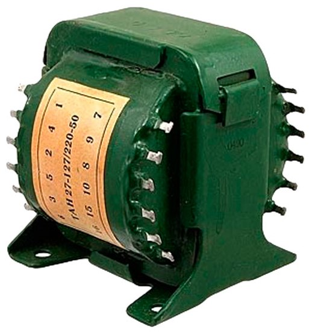
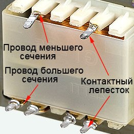
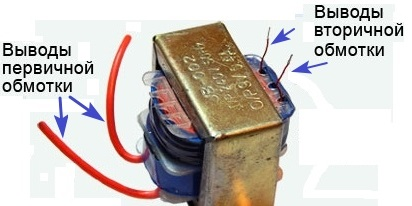
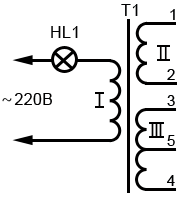

Проверка трансформатора
1. Определение обмоток визуальным осмотром
У некоторых трансформаторов на внешней поверхности изображают электрическую схему с обозначением всех обмоток и выводов или маркируют выводы обмоток цифрами. На старых отечественных трансформаторах указывают маркировку в виде буквенно-цифрового кода, по которому в справочниках можно найти информацию о данном трансформаторе.

Если трансформатор не имеет обозначений, обратите внимание на диаметр проводов обмоток. Как правило, первичная обмотка состоит из проводов меньшего сечения, по сравнению со вторичной обмоткой.

Исключением могут быть повышающие трансформаторы: у них первичная обмотка выполнена толстым проводом, так как генерирует высокое напряжение во вторичной обмотке.
При изготовлении трансформаторов, как правило, сначала наматывают первичную обмотку. Её можно определить по выступающим концам выводов обмотки, расположенных ближе к магнитопроводу. Вторичную обмотку наматывают поверх первичной, и ее концы расположены ближе к внешнему слою изоляции.
В некоторых трансформаторах, используемых в блоках питания бытовой аппаратуры, обмотки располагают на пластмассовом каркасе, разделенном на две части: в одной части находится первичная обмотка, а в другой вторичная. К выводам первичной обмотки припаивают гибкий монтажный провод, а выводы вторичной обмотки оставляют в виде обмоточного провода (рис. 3).

2. Определение обмоток по сопротивлению
После предварительного визуального анализа обмоток трансформатора, необходимо убедиться в правильности сделанных выводов и проверить обмотки на отсутствие обрыва.
Мультиметр переводим в режим «Прозвонка» и измеряем сопротивления предполагаемых первичной и вторичной обмоток: у первичной обмотки сопротивление по постоянному току больше.
Это объясняется тем, что первичная обмотка маломощных трансформаторов и трансформаторов средней мощности содержит 1000…5000 витков тонкого медного провода и может достичь сопротивления до 1,5 кОм. Вторичная обмотка содержит небольшое количество витков, намотанных толстым проводом, и её сопротивление составляет несколько десятков ом.
3. Проверка работоспособности трансформатора
Если сомневаетесь в правильности определения первичной (сетевой) обмотки, нужно последовательно с этой обмоткой включить лампу накаливания на напряжение 220 В и мощностью 40 – 100 Вт (рис. 4). Лампа в этом случае сыграет роль предохранителя (ограничителя тока), и защитит обмотку трансформатора от выхода её из строя.
Если накаливания не горит, сетевая обмотка выбрана правильно и дальнейшее подключение трансформатора можно производить без лампы. Дальнейшее подключение трансформатора можно производить без лампы. Если же лампа будет гореть ярко, то возможно, что сетевая обмотка трансформатора рассчитана на питающее напряжение 110-127 В или её прозвонили неправильно.

При правильном включении работа трансформатора практически беззвучна и сопровождается слегка ощутимой вибрацией. Если же он будет громко гудеть, сильно вибрировать, нагреваться обмотка, из неё пошёл дым, то трансформатор включен неправильно. В этом случае тут же отключайте трансформатор от сети, чтобы не повредить обмотку.
Однако, гудение и вибрация может быть следствием неплотного прилегания каркаса с обмотками к сердечнику или плохая стяжка пластин сердечника магнитопровода. При этом обмотка греться не будет. В этом случае необходимо плотно зафиксировать каркас или детали сердечника.
Если Вы не уверены в правильности выбора сетевой обмотки, её коммутации, в установленных перемычках обмотки, то первое подключение к сети всегда производить с последовательно включённой лампой накаливания.
Источники
sesaga.ru - Как прозвонить трансформатор или как определить обмотки трансформатора